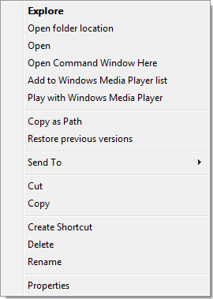
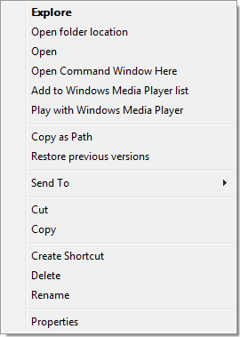

Extended context menu
Many people don't know that the Windows shell provides an
extended context menu if the shift key is pressed
when the menu is shown.
For example, on Vista the
extended menu has a few additional entries. The screenshots
below show this: the left menu is the normal, plain menu
and the right menu is the extended menu which you get if
you hold down the shift key while right clicking:
 

As you can see, the extended menu has the additional entry "Open Command Window Here" which opens a console window with the current path set to that folder, and the entry "Copy as Path" which copies the path of the file/folder to the clipboard.
However if you try this on the explorer tree view on the left, it won't work. The extended menu is only available on the right file/folder view.
TortoiseSVN uses the extended menu too. Some commands are only available in the context menu if you hold down the shift key while right clicking. These are commands which we think are not used a lot (but of course are still useful), or commands that require the user to fully understand the consequences of using that command (which requires the user to read the docs!).
The screenshot on the left is the normal context menu, and the menu on the right is the extended context menu.


Note: On XP, the extended context menu only works on the
list view, not on the tree view!
The commands only available from the extended menu are
"Diff with URL",
"Delete (keep local)",
"Delete unversioned items...",
"Break lock"
and
"Merge reintegrate...".